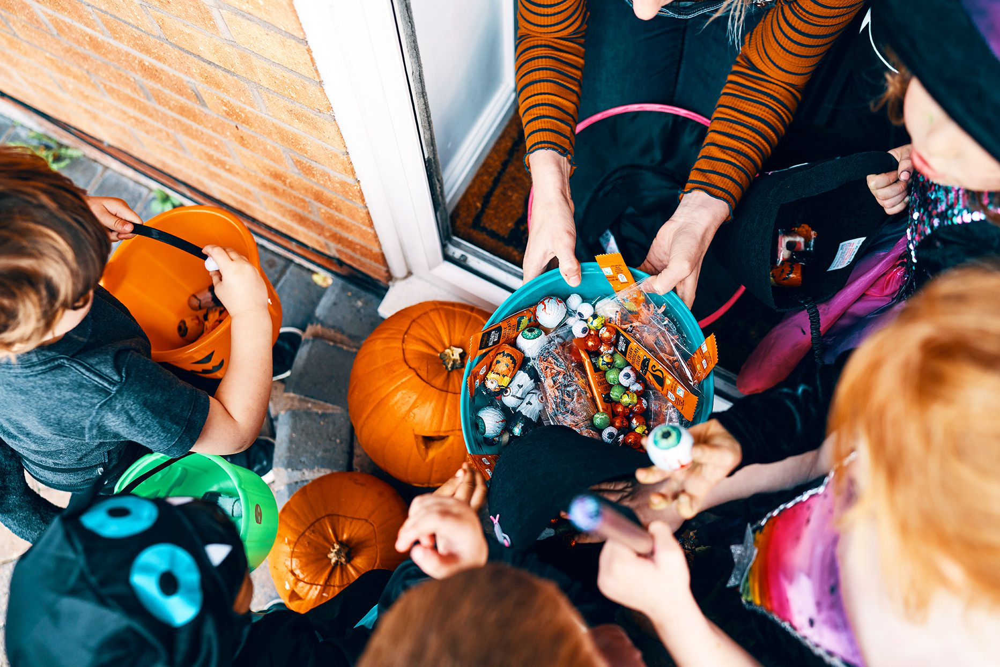

Home
History of Costumes
Home
History of Costumes
.png)
.png)
October 31st - a day of celebration for many, including kids and teenagers. It is such an interesting holiday in which people dress up as things they have feared the whole year. We watch movies, celebrate with parties, go trick-or-treating. But why? What is the history behind this mysterious holiday?
Halloween traces its roots back to the ancient Celtic festival of Samhain. The Celts believed that on this night, the boundary between the living and the dead was blurred, allowing spirits to return to the earth. This small festival is the cause for this widespread holiday we have today.
After the Romans conquered the Celtic cities, two Roman festivals:
1) Feralia (a day where Romans
honored the dead)
and
2) Pomona (a festival celebrating the goddess of fruit and trees)
...blended with Samhain creating Halloween’s customs, such as bobbing for apples.
The tradition of trick-or-treating evolved from various customs, one of them included the medieval practice of "souling," where the poor would go door-to-door asking for food in exchange for prayers for the dead. This transformed into the children asking for candy.

In the late 19th century, the Irish and Scottish immigrant's influence among other things began the transformation of Halloween. These communities introduced traditions such as "trick-or-treating" and pumpkin carving, which evolved from older customs. By the early 20th century, Halloween had shifted to more of a community celebration from its previous darker, superstitious roots. It became a time for children to dress in costumes and go door-to-door for treats. After World War II, the world saw a significant commercialization of Halloween with the rise of mass-produced costumes and decorations. Today, Halloween is celebrated with elaborate festivities, haunted houses, and themed events, making it one of the most popular holidays in the United States, characterized by a blend of fun and spooky elements.

It all started with the festival of Samhain from Celtic traditions. During that time, people believed that the line between the living and the dead was blurred. Therefore, to protect themselves and keep off spirits Celts would dress in disguises, often using animal skins and masks. With the arrival of Irish immigrants Halloween evolved, particularly in the 19th century, where costumes transformed into more playful attire reflecting societal themes and pop culture. With Halloween growing in popularity, the 20th century brang commercially made costumes, further popularizing the practice. Nowadays, Halloween costumes range from fun to scary showcasing a mix of creativity, cultural references, and personal expression.
Halloween is a very popular holiday in the United States. However, it has also got recognition in other countries. Each country has its own cultural twist on the celebration. For example, in Mexico, on November 1st and 2nd, people celebrate the Day of the Dead. A holiday in which people honor the ones who have passed away with colorful altars and beautiful decorations. This holiday blends both indigenous and Catholic traditions. Additionally, countries such as Spain and Italy celebrate celebrate All Saints’ Day. This is also a similar holiday in which the people remember those who have passed. Both of these celebrations predate Halloween and influenced some of our current practices of Halloween.